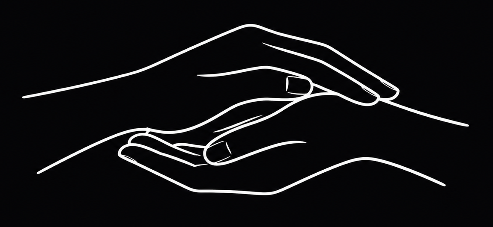

DEVELOP
Phase 2 - Development on the AI‑ADOPT case
Edited by the Gotta cache ‘em all team
Alice Fornari (Law) · Edoardo Rustichini (AI) · Claudia Sammartino (Philosophy) · Luca Sinopoli (AI)
Edited by the Gotta cache ‘em all team
Alice Fornari (Law) · Edoardo Rustichini (AI) · Claudia Sammartino (Philosophy) · Luca Sinopoli (AI)
2003: 13276
2007: 15810

2003: 1575
2007: 1815
“Initial problem: pressure due to a growing number of children awaiting placement.”
Ratio of adoptable children to available couples: 1 to 8–10. Many couples see their three-year eligibility expire without any match.
ISTAT, Dossier famiglia 2010, pp. 29–33.
3 main issues can be identified, with particular emphasis on the erosion of the best interests of the child principle.
Can exclusion without human oversight amount to a form of social scoring?
Art. 5(1)(c), AI Act
ASK 1 ASK 5
A care-based approach does not aim to perfect the system, but to protect the irreducible singularity of the child and the relationships that surround them.
ASK 7Individuals risk being treated as calculable profiles rather than singular, relational persons.
Accountability may be dispersed across professionals, institutions, and the model itself.
Proxies such as postal code, socioeconomic status, or linguistic style may generate bias and indirect discrimination.
Poorly informed families may be unable to understand or challenge the role of ranking.
The system may become a black box, obscuring the reasons behind exclusion or selection.
Faster procedures may reduce delays, but also cause harm through mistaken matches or reductive assessments.
Reducing delays matters, but not at the cost of unjust exclusion or reinforcing existing bias.
Standardisation can limit arbitrariness, but risks erasing the singularity of each case and professional prudence.
The system can detect patterns, but cannot fully grasp lived experience, relationships, and intersubjective compatibility.
Increasing administrative capacity does not justify turning children and families into objects of optimisation.

Gotta cache ‘em all team